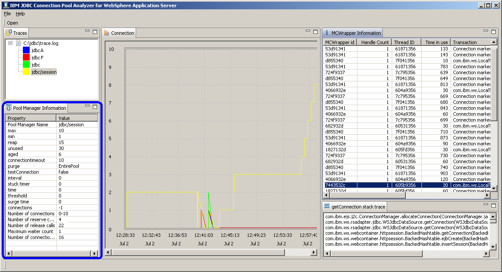

JDBC Connection Pool Manager Information View
JDBC Connection Pool Manager Information View is located on the lower left part of the tool.
JDBC Connection Pool Manager configuration, number of connections, number of reserve calls and release calls,
number of connection wait timeout and maximum waiter count are provided.
